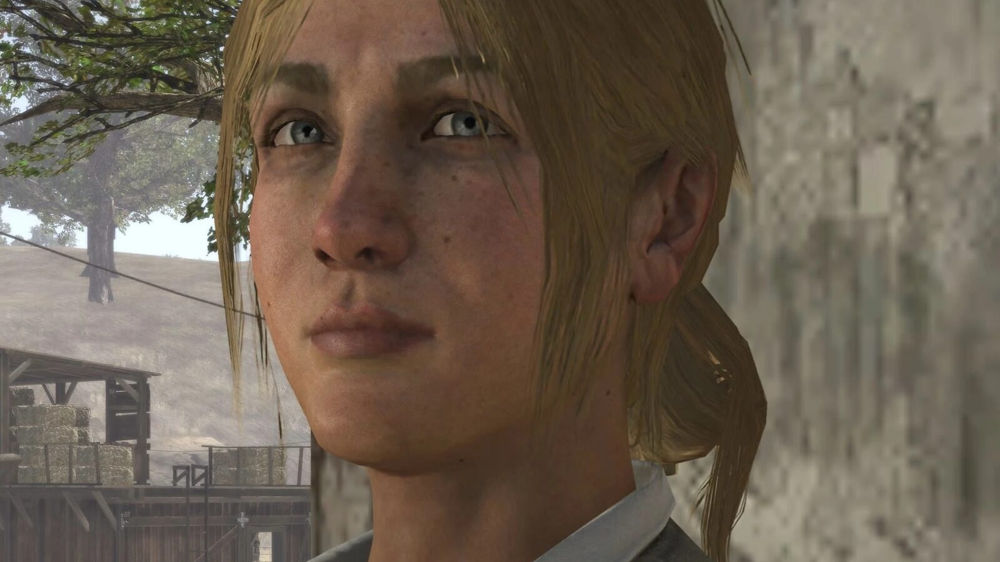
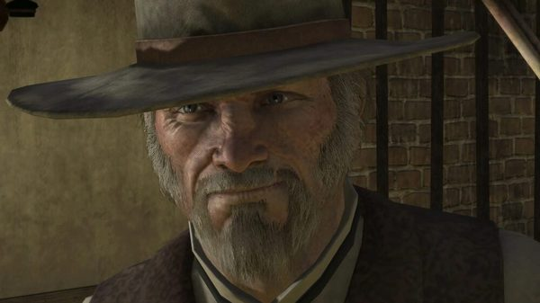
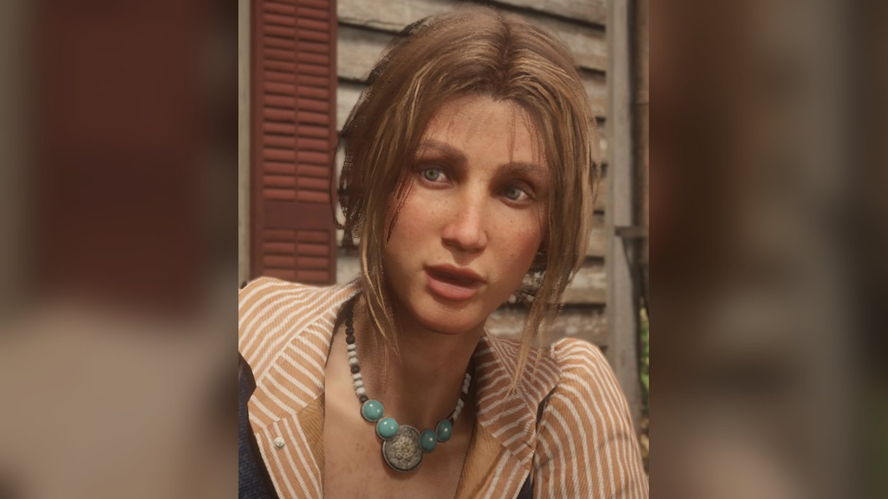
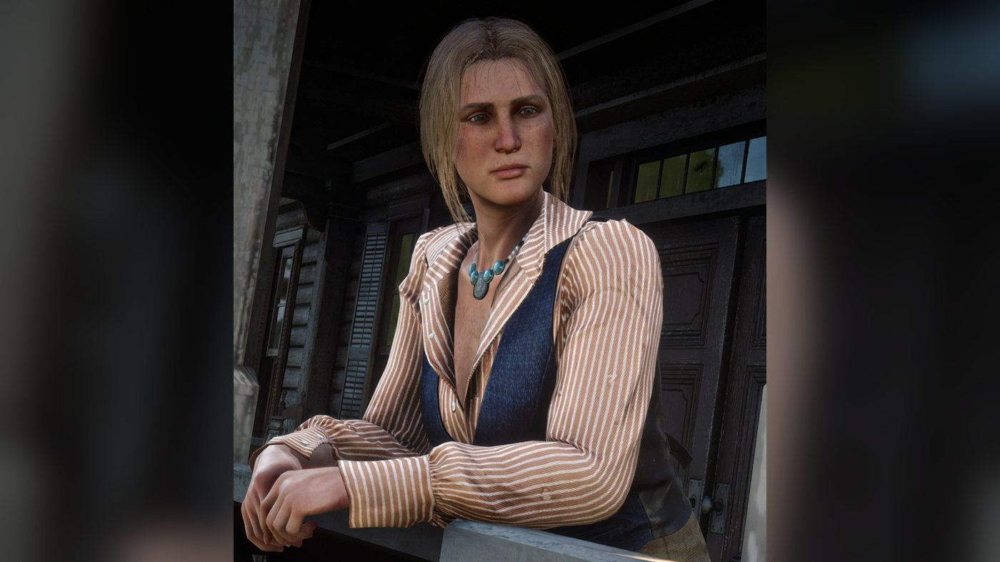
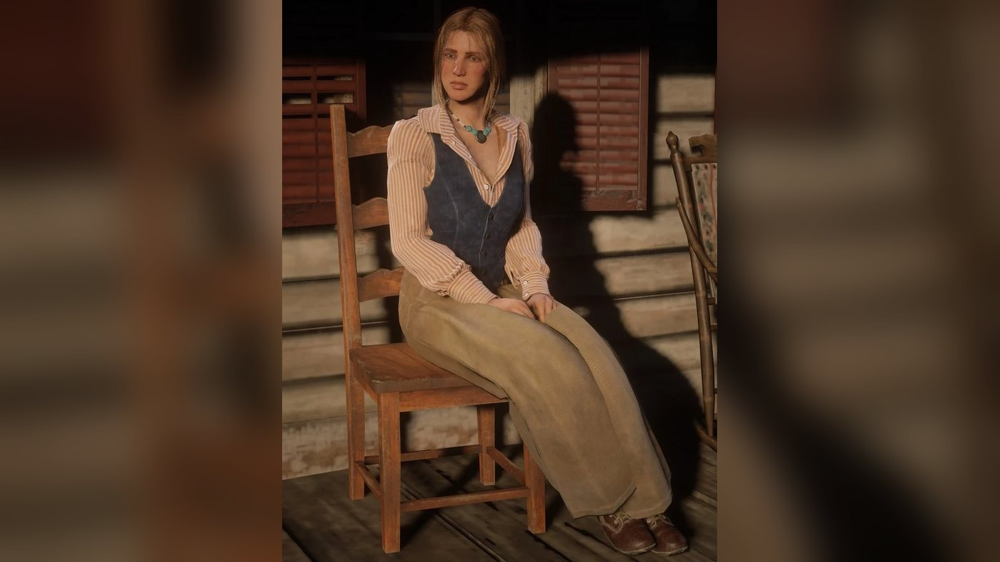
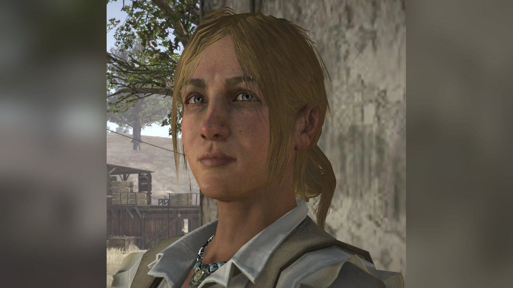
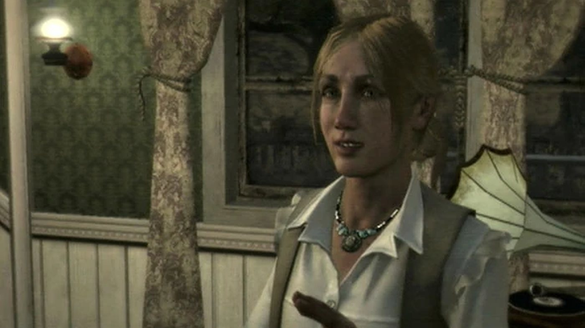
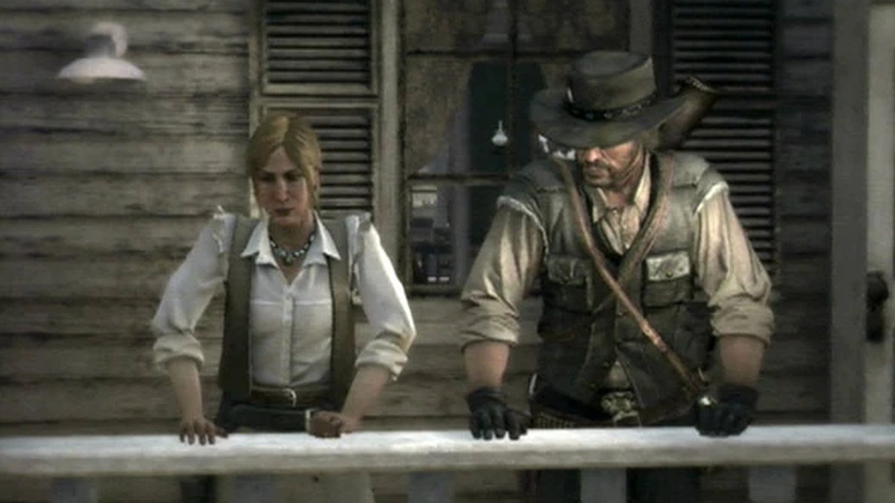

Personnage · New Austin
Bonnie MacFarlane
Bonnie MacFarlane est un personnage de Red Dead Redemption (2010), dont l'action se déroule en 1911. Elle est la fille de Drew MacFarlane, propriétaire du MacFarlane's Ranch, à Hennigan's Stead, dans le New Austin. Avec son employé Amos, elle trouve John Marston au bord de la route après qu'un homme de Bill Williamson lui a tiré dessus à Fort Mercer ; elle l'emmène chez le médecin et le loge et le nourrit contre du travail. La bande de Bill incendie ensuite la grange du ranch et l'enlève ; John et le marshal Leigh Johnson la délivrent à Tumbleweed. Une fois John rentré chez lui, les MacFarlane lui vendent du bétail, puis John et Abigail viennent lui apporter du maïs.
Elle apparaît aussi dans Undead Nightmare et, en 1898, parmi les inconnus de Red Dead Online ; Red Dead Redemption 2 ne fait que la mentionner. Elle est interprétée par Kimberly Irion.
- Nom
- Bonnie MacFarlane
- Naissance
- Vers 1884 (27 ans en 1911 selon le guide officiel et le Red Dead Wiki ; le Blackwater Ledger lui en donne 29)
- Statut
- En vie en 1911 ; absente en 1914, quand le ranch tourne toujours
- Nationalité
- Non précisée dans le jeu (américaine selon le Red Dead Wiki)
- Domicile
- MacFarlane's Ranch, Hennigan's Stead, New Austin
- Activité
- Travaille au ranch d'élevage de son père
- Famille
- Drew MacFarlane (père) ; six frères, dont cinq morts et un banquier à New York
- Jeux
- Red Dead Redemption et Undead Nightmare (2010) ; Red Dead Online (2018) ; mentionnée dans Red Dead Redemption 2
- Interprète
- Kimberly Irion
Biographie
Origines
Bonnie est la fille de Drew MacFarlane, propriétaire du MacFarlane's Ranch, dans le Hennigan's Stead, au New Austin. Les jeux ne donnent pas sa date de naissance. D'après le Red Dead Wiki, elle confie à John Marston, sur la route d'Armadillo, qu'elle a 27 ans ; le guide officiel lui donne le même âge, ce qui situe sa naissance vers 1884. Sa mère n'est jamais nommée. Drew raconte à John que la famille vit sur ces terres depuis trente ans : venue de l'Est, elle s'est installée là où personne ne s'était encore fixé. Il énumère les épreuves traversées : dix ans de combats contre les Amérindiens, puis les hors-la-loi, la sécheresse, la variole, des hivers terribles et le choléra. Il dit avoir enterré plus d'enfants qu'il n'en a élevé.
Bonnie a eu six frères. Elle explique à John que cinq d'entre eux sont morts, de maladie ou par imprudence. D'après le Red Dead Wiki, leurs tombes se trouvent au cimetière de Coot's Chapel : Hank est mort de la tuberculose à douze ans en 1893, Owen d'une diarrhée chronique à quatorze ans en 1896, Cole d'une balle dans la tête en 1899, Ethan à dix-neuf ans en 1903 en voulant traire un taureau, et Gus dans une bagarre de saloon à vingt-deux ans en 1905. Le sixième est parti dans l'Est une dizaine d'années avant 1911 et n'est jamais revenu. D'après sa dernière lettre, il est banquier à New York. Bonnie ne dit pas son nom ; le wiki l'appelle Patrick, le prénom qu'emploient les habitants de la région quand ils parlent de lui. L'un de ses frères lisait des romans à quatre sous, raconte-t-elle à John.
Son père a engagé deux ou trois gouvernantes bon marché pour apprendre les bonnes manières à ses enfants. D'après le Red Dead Wiki, Bonnie raconte aussi à John que l'une d'elles se disait française mais parlait russe, à l'époque où son père pensait faire d'elle une dame, et qu'elle a rarement quitté le Hennigan's Stead. Après le départ de son frère, c'est elle qui a pris la place de l'homme du ranch. Son père, dit-elle, est plus fragile qu'il n'en a l'air, même s'il ne l'admettra jamais. Elle ne s'est pas mariée. Il y a bien eu quelques prétendants, explique-t-elle, mais un ranch perdu au milieu du Hennigan's Stead n'est pas l'endroit rêvé pour trouver un mari, et Amos, qui travaille au ranch, lui paraît un peu trop campagnard. Selon le wiki, elle ajoute qu'elle a épousé le ranch et qu'elle est désormais trop vieille.
En 1911, le ranch va mal. Bonnie confie à John que les dettes de son père restent écrasantes malgré tout son travail, et qu'elle a peur chaque jour de perdre le ranch, ce qui le tuerait. Elle doute qu'il tienne encore cinq ans, les hommes d'affaires prenant la place des cow-boys (ses mots sont cités dans la rubrique Citations). Voleurs de bétail et autres indésirables pillent le ranch, et les lapins dévorent les récoltes. D'après le Red Dead Wiki, elle dit ne plus se sentir en sécurité dans son propre lit, passer ses nuits à surveiller la propriété, et constate que tout le monde, dans la région, porte désormais une arme.
Red Dead Online (1898)
Red Dead Online se déroule en 1898. D'après le Red Dead Wiki, le personnage du joueur peut rencontrer Bonnie sur le perron de sa maison, au MacFarlane's Ranch. Elle commence par le soupçonner de vouloir la voler. Quand elle apprend qu'il vient chercher du travail, elle lui dit que son père et elle vont s'absenter quelque temps, à cause de l'épidémie d'Armadillo. Amos les interrompt : l'un des chariots du ranch a disparu. Bonnie envoie le joueur le récupérer et promet de le payer à son retour. La page de la mission situe le chariot au bord de la route, à Brittlebrush Trawl, gardé par une bande de six hommes. Bonnie reste ensuite au ranch, où elle confie des missions en monde libre (voir les rubriques Compétences et Missions).
Red Dead Redemption 2 (1899)
Bonnie n'apparaît pas dans Red Dead Redemption 2, mais un homme amoureux d'elle, si. Lors d'une rencontre aléatoire, le joueur peut trouver sur un rivage un rescapé de naufrage, près de Flatneck Station ou au sud de Van Horn Trading Post. Il semble mort, mais quand on le fouille, il se réveille, tend une lettre et perd de nouveau connaissance. La rencontre peut se jouer avec Arthur en 1899 ou avec John dans l'épilogue de 1907. Le document, que le Red Dead Wiki recense sous le titre "Letter to Bonnie MacFarlane", est adressé à "Miss MacFarlane". Son auteur s'excuse et reconnaît qu'il se monte facilement la tête. Il dit les avoir vus en rêve, mariés et entourés d'enfants. Il part faire fortune et compte revenir riche. Il est persuadé que le père de Bonnie finira par l'accepter, malgré ses modestes origines.
Red Dead Redemption 2 : l'épilogue (1907)
John peut se rendre au MacFarlane's Ranch pendant l'épilogue de 1907. Le ranch est presque vide, et plusieurs bâtiments manquent ou restent inachevés, dont la gare et le magasin général. Ni Bonnie ni son père ne s'y trouvent, comme l'a relevé Javy Gwaltney, de Game Informer, le 28 novembre 2018 (voir Accueil). Le jeu n'en donne pas la raison ; le Red Dead Wiki en avance deux, contradictoires : une épidémie de choléra sur la page de Bonnie, un deuil dans la famille sur celle du ranch.
Red Dead Redemption (1911)
Acte I : New Austin
Le Red Dead Wiki situe le début de Red Dead Redemption au début d'octobre 1911, d'après les journaux parus au fil du jeu. Bonnie se trouve dans le train qui emmène John de Blackwater à Armadillo ; le jeu ne dit pas pourquoi elle a fait ce voyage. Elle lui racontera plus tard l'avoir vu monter à Blackwater avec les messieurs en chapeau melon. Dans "Exodus in America", John se rend à Fort Mercer et somme Bill Williamson de sortir. L'un des hommes de Bill lui tire dessus, et la bande le laisse pour mort. Bonnie et Amos le trouvent au bord de la route et le hissent dans leur chariot. John racontera plus tard à Abigail que Bonnie l'a emmené chez le médecin, et Bonnie lui dira que c'est le docteur d'Armadillo, Nathanial Johnston, qui lui a sauvé la vie. Il reprend connaissance au ranch.
Dans "New Friends, Old Problems", John se réveille dans une chambre du ranch. Bonnie lui apprend que le médecin a extrait les balles deux jours plus tôt et pense qu'il s'en remettra, et qu'il en a coûté 15 $. Elle lui demande s'il cherchait à mourir en défiant le pire bandit du comté, puis se présente : Miss Bonnie MacFarlane. John explique qu'il voulait laisser une chance à Bill, en souvenir du bon vieux temps, et qu'il compte désormais s'occuper de lui de façon moins aimable. Elle lui propose de rembourser les frais du médecin en surveillant avec elle les limites du domaine. Une fois John remis sur pied, elle lui confie un cheval et lui fait visiter le ranch : le bureau du contremaître et sa prison, le magasin général, l'enclos des chevaux, la gare, la grange et sa maison, où elle lui offre un verre bien frais.
Le soir même, elle lui demande de monter la garde avec elle le long de la clôture, à cause des voleurs de bétail, et lui remet un fusil. Pendant la ronde, ils abattent des lapins dans le potager, puis des coyotes entrés dans les poulaillers ; quelques poules sont perdues. Bonnie constate qu'il sait se servir d'un fusil et promet que la famille l'aidera autant que possible contre Bill. Elle le conduit à sa chambre. Dans "Obstacles in Our Path", elle lui demande comment il connaît Bill et ce qu'il lui voulait. John refuse de répondre : le lui dire la mettrait en danger, elle et des gens qui lui sont chers. Elle s'excuse d'être indiscrète et le défie à la course à cheval. Après la course, elle lui conseille d'aller voir le marshal d'Armadillo, Leigh Johnson, au sujet de Bill.
Dans "This is Armadillo, USA", Bonnie demande à John de l'accompagner à Armadillo pour des provisions et lui laisse les rênes de son chariot. En chemin, elle parle de l'espoir, dont aucun éleveur ne peut se passer dans ce pays, dit-elle. Elle ne le croit pas mauvais, seulement un peu bête, et s'inquiète de le voir sillonner la région comme un chasseur de primes. John lui raconte qu'il possède une petite exploitation dans les Great Plains, qu'il cultive depuis trois ans environ, et qu'il l'a confiée à Uncle. Quand il décrit le New Austin comme le dernier vrai pays des hors-la-loi, elle lui répond que cette époque est révolue, si tant est qu'elle ait existé. En ville, elle lui offre ses premiers médicaments au cabinet du médecin, puis repart vers le ranch.
Dans "Women and Cattle", Bonnie a appris par Leigh Johnson que John compte s'installer dans la région. John lui explique qu'il a déjà une vie et qu'il essaie d'en finir avec une autre pour que la première survive. Quand elle lui demande de l'appeler par son prénom, il se livre : il est marié, il a un fils, il a eu une fille, morte depuis ; des années plus tôt, il faisait partie d'un gang qui pillait banques et trains, dont Bill était membre ; s'il ne capture pas Bill, sa famille en pâtira. Il évoque aussi son père, sa mère et le chef du gang qui lui a appris à lire. Bonnie lui demande s'il a tué des gens ; il répond que oui, et qu'il en a souffert. Elle lui demande ensuite de l'aider à mener le troupeau vers le pâturage du fond, et le remercie de s'être confié.
Dans "Wild Horses, Tamed Passions", Bonnie présente John à son père. Drew a appris par sa fille que John est en mission secrète pour débarrasser le comté de quelques indésirables, et lui confie qu'à ses yeux, un agent fédéral est une menace pire que Williamson. Bonnie remet un lasso à John, et tous trois partent dresser des chevaux sauvages. Drew a vu le télégramme que le marshal a reçu de Blackwater, et Bonnie dit avoir vu les hommes du train. De retour au ranch, Drew leur transmet ce qu'Amos lui a dit : d'autres chevaux ont été repérés près d'Armadillo. En chemin, elle parle à John de ses gouvernantes et de ses prétendants (voir Origines), et il la compare à sa femme (voir Relations). Bonnie et John rabattent la harde dans un canyon, et John rattrape et dresse l'étalon qui s'échappe. Bonnie le lui offre au nom de toute la famille.
Dans "A Tempest Looms", un orage approche et le troupeau est dispersé dans toute la vallée. Amos a mis les chevaux et les poules à l'abri et refuse que les hommes se fassent surprendre par la tempête ; Bonnie lui rétorque que sans le troupeau, ils mourront de toute façon. John se range de son côté et demande à Amos de rassembler ses hommes. En chemin, Bonnie demande à John s'il est croyant. La foudre frappe un arbre et le bétail s'emballe vers une falaise ; John lui coupe la route, et ils ramènent les deux troupeaux au ranch. Bonnie lui dit qu'il a sauvé le troupeau.
"The Burning" fait suite à "A Tempest Looms" et à la mission de Leigh Johnson "Spare the Rod, Spoil the Bandit". Drew est parti inspecter ses terres et n'est pas revenu, et Bonnie demande à John de l'aider à le chercher. En chemin, elle lui parle de ses frères (voir Origines). Ils trouvent Drew près d'hommes et de chevaux morts ; il accuse des voleurs de bétail, peut-être les jumeaux Bollard, et renvoie sa fille chercher le chariot avec John. Sur le trajet, Bonnie reproche à John les hommes qu'il a tués et ce code dont se réclament, selon lui, les hors-la-loi. Au ranch, la grange est en feu et ses portes sont bloquées. John grimpe à l'éolienne pour entrer dans la grange par le haut et libère les chevaux, tandis que la fumée fait reculer Bonnie. D'après la page de la mission et celle du Red Dead Wiki consacrée à Bonnie, ce sont les hommes de Williamson qui ont allumé l'incendie. Ensuite, John fait remarquer à Bonnie que la bande semble vraiment vouloir chasser la famille.
Amos remercie John. Bonnie lui dit qu'il a sauvé le ranch et que sa famille a une grande dette envers lui. John répond qu'elle lui a sauvé la vie et ne demande qu'une chose : une fois rentré chez lui et sa ferme relancée, qu'elle lui vende du bétail. Elle accepte, puis va voir comment son père tient le coup.
Dans "Hanging Bonnie MacFarlane", Bonnie n'a pas été vue depuis l'après-midi de la veille. Le Blackwater Ledger rapportera qu'elle a été enlevée chez elle. John trouve Drew au bureau du marshal, à Armadillo, qui s'en prend à lui. Drew avoue qu'il ne supporterait pas de perdre encore un enfant. Un cavalier de la bande de Bill surgit devant le bureau : il exige la libération de Norman Deek, enfermé à la prison d'Armadillo, en échange de Bonnie, et leur laisse deux heures pour l'amener à Tumbleweed. Il menace de la livrer à quinze de ses amis, et de l'égorger lui-même s'ils tentent un coup fourré. John promet à Drew de lui ramener sa fille. Jonah, l'adjoint de Johnson, sort Deek du bureau pieds et poings liés, et la troupe se met en route, le prisonnier attaché sur un cheval. À Tumbleweed, John conduit Deek au milieu de la ville sous les provocations du prisonnier, qui parle d'elle, mais Kent Gallaway, de la bande, refuse tout marché et abat Deek. D'après la page de la mission, le tabouret sur lequel Bonnie se tient est renversé pendant la fusillade. John la décroche, ou tranche la corde d'une balle à distance.
Bonnie le remercie, puis lui demande pourquoi il a mis autant de temps. D'après le Red Dead Wiki, la corde a pris sur le côté de la gorge, si bien que sa nuque ne s'est pas rompue ; elle portait des traces de coups. Le wiki ajoute que le marshal Johnson la ramène à Armadillo une fois les hommes de la bande abattus. L'article du Blackwater Ledger "Kidnapped Woman Found Alive" raconte qu'elle a échappé de peu à la pendaison après une fusillade entre les hommes de loi d'Armadillo et la bande de Williamson, à Tumbleweed. Le journal juge le mobile obscur, rattache l'enlèvement à la capture de Deek et précise que le corps de Williamson n'a pas été retrouvé. Bonnie ne joue plus aucun rôle dans la suite de l'acte I.
Acte III : West Elizabeth
Après la mort de Dutch van der Linde, John rentre à Beecher's Hope, où le bétail a été volé. Dans "The Outlaw's Return", il se rend avec son fils Jack au MacFarlane's Ranch pour acheter un troupeau. Drew les accueille et les envoie retrouver Bonnie à l'enclos. John lui rappelle sa promesse de revenir, faite après l'incendie de la grange ; elle s'en souvient, mais avoue n'en avoir pas cru un mot. Elle l'interroge sur le Mexique, où il était parti d'après ce qu'elle avait entendu dire, et sur Williamson ; John répond que Bill et lui ont réglé leurs comptes. John lui présente Jack. Bonnie prend des nouvelles de sa femme et se dit heureuse qu'ils soient de nouveau réunis ; le ranch, dit-elle, survit, mais rien n'est devenu plus facile. Elle les accompagne jusqu'à la sortie du domaine, puis fait demi-tour (ses mots d'adieu figurent dans la rubrique Noms).
Dans "Old Friends, New Problems", qui fait suite à la mission d'Abigail "Pestilence", un télégramme de Bonnie arrive à Beecher's Hope. Abigail ne sait pas lire, si bien que John le lit à voix haute : charançons et mites ont dévoré tout le maïs du comté, et Bonnie a un besoin urgent de sacs de maïs. Abigail l'envoie aider celle qui lui a sauvé la vie, puis décide de l'accompagner. Au ranch, Bonnie les remercie et explique qu'ils ont perdu toute la récolte. John lui présente sa femme. Abigail remercie Bonnie d'avoir sauvé son mari et de lui avoir appris les bonnes manières ; Bonnie répond qu'elle ne s'est jamais risquée à changer un homme, et Abigail rétorque que les gens peuvent changer. Pendant que Trent Oxley, un employé du ranch, décharge les sacs, Bonnie demande à Abigail comment elle se remet de son épreuve, et les deux femmes se moquent gentiment de John.
Tandis que les Marston s'éloignent, Bonnie les regarde partir, puis suit Amos dans le magasin général. C'est sa dernière apparition dans l'histoire. Sur le chemin du retour, Abigail trouve Bonnie jolie, dit qu'elle l'apprécie et qu'elle a rougi en voyant John ; il répond qu'il fait cet effet-là aux femmes. Le jeu ne montre pas si Bonnie apprend la mort de John, tué à Beecher's Hope dans "The Last Enemy That Shall Be Destroyed".
Red Dead Redemption : l'épilogue de 1914
Bonnie n'apparaît pas dans l'épilogue de 1914, et le jeu ne dit rien de son sort. D'après le Red Dead Wiki, le ranch fonctionne toujours en novembre 1914, malgré ses craintes pour l'avenir. Jack y est toujours bien reçu et peut utiliser la cabane où son père s'était rétabli trois ans plus tôt. Il ne croise jamais Bonnie, mais les habitants du ranch parlent encore d'elle, comme en 1911.
Undead Nightmare (hors canon)
Undead Nightmare ne fait pas partie du canon de la série. Une fois que John a débarrassé le MacFarlane's Ranch des morts-vivants, Bonnie l'accueille sur son perron et lui confie la mission secondaire "Paternal Pride". Elle lui explique que son père rassemble les morts-vivants pour les enfermer dans la grange, et qu'elle est sans nouvelles de lui depuis au moins un jour. Elle demande à John d'aller voir. Les portes de la grange refusent de s'ouvrir : John entre par l'éolienne ou par une fenêtre et abat les morts-vivants qui s'y trouvent. Drew surgit de sous des bottes de foin, devenu l'un d'eux, et John doit l'abattre avec une Winchester Repeater trouvée dans la grange.
John revient vers le perron sans un mot ; d'après la page de la mission, Bonnie comprend à son silence et lui fait remarquer, ironique, qu'il apporte toujours un rayon de soleil dans sa vie. Il s'assoit à côté d'elle et lui dit qu'il est désolé pour son père. Elle répond que Drew est mort en protégeant ceux qu'il aimait, et John l'approuve. Chacun demande à l'autre de prendre soin de lui, puis Bonnie rentre chez elle. On ne la revoit plus dans l'extension.
Personnalité
Le guide officiel de l'édition Game of the Year de Red Dead Redemption la présente ainsi : "Bonnie is the 27-year-old daughter of a prominent rancher. She is unmarried, educated, and a kind-hearted proto feminist. At one point, she takes a romantic interest in Marston, and this evolves into a solid friendship. Some day in the future, she expects to inherit and run the MacFarlane ranch." (fille d'un rancher en vue, 27 ans, célibataire, instruite, protoféministe au grand cœur ; elle éprouve un temps de l'attirance pour Marston, qui se mue en solide amitié ; elle compte hériter un jour du ranch et le diriger). Les descriptions de personnages publiées par Rockstar en septembre 2018 portent sur le gang de Red Dead Redemption 2 et ne la concernent pas.
Dans le jeu, elle paie les soins d'un inconnu et l'héberge contre du travail (voir la biographie). Elle parle franchement à John : elle juge stupide son coup d'éclat à Fort Mercer, lui reproche de parler par énigmes et se moque de son code d'honneur de hors-la-loi. Quand il décrit le New Austin comme la dernière terre des hors-la-loi, elle lui répond que ça sort d'un mauvais roman. Elle s'inquiète ouvertement pour l'avenir du ranch et se méfie des inconnus qu'amène le chemin de fer.
Dans ses propres mots
Sur la route d'Armadillo, dans "This is Armadillo, USA" : "Oh, there's always hope, Mr. Marston. You can't be a rancher in this kind of country if you don't believe that." (il y a toujours de l'espoir, monsieur Marston ; impossible d'être rancher dans un pays pareil sans y croire). En chevauchant avec son père dans "Wild Horses, Tamed Passions" : "There's certain things in this country a woman could do much better, if you ask me." (si vous voulez mon avis, il y a des choses dans ce pays qu'une femme ferait bien mieux). Quand John affirme que chacun a un code, dans "The Burning" : "There's nothing more depressing than a man who's found a way to think the bad into good." (rien de plus déprimant qu'un homme qui a trouvé le moyen de faire passer le mal pour le bien). À Abigail, qui la remercie d'avoir appris les bonnes manières à John, dans "Old Friends, New Problems" : "I knew better than to try to change a man." (j'ai eu la sagesse de ne pas essayer de changer un homme).
Noms
Elle se présente à John comme "Miss Bonnie MacFarlane", et il l'appelle "Miss MacFarlane" pendant presque tout le jeu. Dans "Women and Cattle", elle lui lance : "Ugh, call me Bonnie, you fool. Call me Bonnie." (appelez-moi Bonnie, idiot, appelez-moi Bonnie). Dans la même scène, il emploie son prénom ("I've said too much, Bonnie", j'en ai trop dit, Bonnie), et il le refait en la décrochant dans "Hanging Bonnie MacFarlane" ("Bonnie, are you okay?", Bonnie, ça va ?). Dans Undead Nightmare, d'après la page de la mission, il le prononce aussi dans "Paternal Pride". Quand ils se quittent dans "The Outlaw's Return", elle revient à la charge : "Call me Bonnie, you dolt!" (appelez-moi Bonnie, espèce d'andouille !). Elle-même lui dit "Mr. Marston" ; après l'incendie de la grange, dans "The Burning", elle le remercie en l'appelant John, avant de revenir à "Mr. Marston" dans la même scène. Son père, elle l'appelle "Pa" ou "Daddy".
Apparence
D'après le Red Dead Wiki, elle a les yeux bleu-vert et les cheveux blond foncé, noués en chignon, plus lâche en 1911 qu'en 1898. Aux deux époques, elle porte un collier turquoise à breloque de métal et, comme la plupart des personnages masculins, deux ceintures : une ordinaire et un ceinturon. En route vers le ranch, John la décrit à Abigail comme "pretty normal" (plutôt ordinaire).
Relations

John Marston
Bonnie et son employé Amos trouvent John au bord de la route après Fort Mercer ; elle l'emmène chez le médecin puis l'héberge au ranch contre du travail (voir la biographie). Elle le taquine sur sa gâchette facile, ses énigmes ou son odeur, et il lui renvoie la balle. Dans "This is Armadillo, USA", elle qualifie leur rencontre de "an unusual start to a friendship" (un drôle de début pour une amitié) ; John répond qu'il ne savait pas qu'ils étaient amis, et elle balaie la remarque. Ce qu'elle pense de son avenir d'éleveur est cité dans la rubrique Citations.
Dans "Women and Cattle", John lui raconte sa famille et ses années dans le gang (voir la biographie). Dans "Wild Horses, Tamed Passions", il lui dit que sa femme lui ressemble, "a woman in a man's world" (une femme dans un monde d'hommes), formule qu'il reprend quand Abigail lui demande comment est Bonnie. Après l'incendie de la grange, elle lui dit que sa famille a une dette envers lui ; il demande seulement que la famille lui vende du bétail une fois rentré chez lui, ce qui sera fait en 1911 (voir la biographie). Leur dernière scène dans le récit canonique est la livraison de maïs de "Old Friends, New Problems". Le regard du guide officiel sur leur relation est cité dans la partie Personnalité.
Drew MacFarlane
Son père possède le MacFarlane's Ranch. Ce qu'il raconte des trente ans de la famille sur ces terres, comme les inquiétudes de Bonnie pour ses dettes et sa santé, figure dans la partie Origines. Quand il ne rentre pas d'une tournée à cheval, dans "The Burning", elle dit qu'il est tout ce qui lui reste. Le Red Dead Wiki attribue sa voix à Chuck Kelley. Dans Undead Nightmare, hors canon, Bonnie le perd dans la grange (voir la biographie).
Amos
Le Red Dead Wiki présente Amos comme le chef des employés du MacFarlane's Ranch. Il est avec Bonnie quand elle trouve John après Fort Mercer. Dans "A Tempest Looms", ils se disputent sur l'idée d'envoyer les hommes sous l'orage, jusqu'à ce que John demande à Amos de rassembler ses hommes (voir la biographie). Dans "Wild Horses, Tamed Passions", quand John lui demande pourquoi elle ne s'est jamais mariée, elle trouve Amos un peu "countrified" (rustaud). Sa dernière scène dans l'histoire principale s'achève quand elle le suit dans le magasin général. Le wiki attribue sa voix à Dan Campbell et signale qu'il joue au poker avec les employés du ranch.
Patrick MacFarlane
Son seul frère encore en vie, le banquier de New York (voir Origines). Bonnie dit à John qu'elle ne veut pas de son aide, qu'elle s'inquiète un peu pour son âme et qu'elle n'a encore jamais croisé d'homme en cravate qui lui inspire confiance.
The MacFarlane brothers
Cinq de ses six frères sont morts ; leurs noms, leurs tombes et les causes de leur mort sont donnés dans la partie Origines.

Abigail Marston
Les deux femmes se rencontrent pour la première fois dans "Old Friends, New Problems" (voir la biographie). Quand Bonnie l'interroge sur ce qu'elle a vécu, Abigail répond qu'elle a connu pire. Quand John se moque de la cuisine d'Abigail et que toutes deux s'en prennent à lui, il dit ne s'être jamais senti aussi en minorité.

Jack Marston
Bonnie fait la connaissance de Jack dans "The Outlaw's Return" (voir la biographie). John lui dit de saluer Miss MacFarlane ; quand il se plaint de l'arrogance de la jeunesse, Bonnie répond que le garçon doit tenir de son père. En 1914, Jack ne la croise jamais (voir la biographie).

Bill Williamson
Quand elle conseille à John d'aller voir le marshal, Bonnie appelle Bill "that nice Mr. Williamson" (ce charmant M. Williamson). La fusillade de Fort Mercer, l'incendie de la grange, son enlèvement et ce que John lui dit de Bill en 1911 sont racontés dans la biographie.

Leigh Johnson
Bonnie envoie John chez le marshal et apprend ensuite par lui ce que John compte faire (voir la biographie). En route vers Tumbleweed, Johnson demande à John s'il ne profite pas des MacFarlane, qui sont selon lui vulnérables, chacun à sa manière. C'est lui qui mène la troupe qui la délivre.
Norman Deek
Bras droit de Bill Williamson détenu à la prison d'Armadillo : c'est le prisonnier que la bande réclame en échange de Bonnie (voir la biographie).
Nathanial Johnston
Le médecin d'Armadillo, dont le nom figure sur son enseigne en ville, soigne John après Fort Mercer (voir la biographie). Dans "This is Armadillo, USA", Bonnie demande à John d'être poli avec lui, puisqu'il lui a sauvé la vie.

Uncle
Bonnie ne le rencontre jamais. Quand John lui explique, dans "This is Armadillo, USA", qu'Uncle garde sa ferme, elle ironise : voilà la personne idéale à qui confier tout son gagne-pain. Elle conseille à John d'y retourner au plus vite.
Bonnie's suitor
Le rescapé du naufrage de Red Dead Redemption 2 porte une lettre d'amour qui lui est adressée (voir la biographie).
Red Dead Online protagonist
En 1898, Bonnie prend d'abord le protagoniste de Red Dead Online pour un voleur, puis l'engage pour retrouver un chariot disparu (voir la biographie), avant de lui proposer les missions en mode libre décrites dans la partie Compétences.
Compétences, armes et chevaux
Au ranch
Bonnie confie à John la première série de missions du jeu (voir les Missions), et chacune montre une part de son travail. Elle patrouille la nuit sur la propriété, fusil en main, et la page de la mission "New Friends, Old Problems" précise que le joueur n'a pas besoin de tirer sur les lapins et les coyotes, puisqu'elle les abat elle-même. Elle défie John à la course dans "Obstacles in Our Path" : d'après le Red Dead Wiki, elle est difficile à battre avec le premier cheval de John, la conversation change selon l'état de la course, et la victoire ne rapporte aucun bonus : la récompense est de 20 points de Fame dans tous les cas. Elle conduit le chariot du ranch et en confie les rênes à John avant de partir pour Armadillo. Elle mène le bétail, attrape au lasso des chevaux sauvages et ramène le troupeau avec John en plein orage dans "A Tempest Looms". D'après la page du wiki consacrée à Drew MacFarlane, c'est son père qui lui a appris à dresser les chevaux et à tenir le ranch.
Elle équipe aussi John. "New Friends, Old Problems" lui vaut un cheval qu'elle a choisi pour lui (un Cleveland Bay dans la version d'origine, un War Horse dans l'édition Game of the Year et les versions suivantes) et la Repeater Carbine dont il se sert pendant la ronde, et débloque le premier niveau du Dead Eye. La même mission ouvre la planque du MacFarlane's Ranch et le travail de veilleur de nuit (Nightwatch) du ranch. Dans "Wild Horses, Tamed Passions", elle lui remet un lasso, puis lui laisse en remerciement, au nom de la famille, l'étalon qui s'était échappé du troupeau, un Kentucky Saddler.
Dans Red Dead Online, en 1898
Dans Red Dead Online, elle fait partie des inconnus (Strangers) du MacFarlane's Ranch, dans le New Austin. Après sa présentation (voir la biographie), elle propose quatre types de missions en mode libre : Recovery (récupérer un chariot volé), Delivery (livraison), Caravan Escort (escorte de convoi) et On The Hunt, où le joueur traque un grizzly. D'après le Red Dead Wiki, accepter ses missions fait monter l'honneur du joueur. Leurs points de départ et d'arrivée figurent dans le tableau des Missions.
Armes et chevaux
Le Red Dead Wiki lui attribue un Cattleman Revolver, une Repeater Carbine et un Double-barreled Shotgun. Des illustrations la montrent avec une Winchester Repeater, une arme qu'elle ne porte jamais dans le jeu, selon le même wiki. Ses chevaux, d'après la liste du wiki : un Painted Quarter Horse, un Standardbred Pinto et un Painted Standardbred.
Missions
Bonnie confie à John les premières missions de Red Dead Redemption après "Exodus in America" : sa série va de "New Friends, Old Problems" à "Hanging Bonnie MacFarlane" et sert à apprendre les bases du jeu (tir, équitation, conduite d'un chariot, conduite de troupeau, lasso, escalade). Elle revient dans deux missions de l'acte III et dans une mission secondaire d'Undead Nightmare. Dans Red Dead Online, elle propose des missions en monde libre. Le déroulé des événements se trouve dans la Biographie.
Red Dead Redemption et Undead Nightmare
| Mission | Acte | Rôle de Bonnie |
|---|---|---|
| Exodus in America | Acte I : New Austin | Voyage dans le même train que John, puis le trouve blessé près de Fort Mercer avec Amos. |
| New Friends, Old Problems | Acte I : New Austin | Donneuse de mission. Annonce à John le prix de ses soins, lui fait visiter le ranch et surveille la propriété avec lui la nuit. |
| Obstacles in Our Path | Acte I : New Austin | Donneuse de mission. Interroge John sur Bill, le défie à la course à cheval et l'envoie voir le marshal. |
| This is Armadillo, USA | Acte I : New Austin | Donneuse de mission. Se rend avec John à Armadillo dans son chariot et lui offre ses premiers médicaments. |
| Women and Cattle | Acte I : New Austin | Donneuse de mission. Écoute John raconter son passé, puis lui fait mener le troupeau au pâturage. |
| Wild Horses, Tamed Passions | Acte I : New Austin | Donneuse de mission. Présente son père, remet un lasso à John, dresse des chevaux avec lui et lui offre l'étalon. |
| A Tempest Looms | Acte I : New Austin | Donneuse de mission. Se dispute avec Amos, puis ramène le troupeau à travers l'orage avec John. |
| The Burning | Acte I : New Austin | Donneuse de mission. Cherche son père avec John, puis le voit sauver les chevaux de la grange en feu. |
| Hanging Bonnie MacFarlane | Acte I : New Austin | Enlevée par la bande de Williamson et presque pendue à Tumbleweed ; décrochée par John. |
| The Outlaw's Return | Acte III : West Elizabeth | Fait la connaissance de Jack et aide John à sortir du ranch le bétail qu'il achète. |
| Old Friends, New Problems | Acte III : West Elizabeth | Envoie le télégramme réclamant du maïs, puis fait la connaissance d'Abigail au ranch. Sa dernière apparition dans l'histoire. |
| Paternal Pride | Undead Nightmare | Donneuse de mission. Demande à John de retrouver son père dans la grange. |
Red Dead Online et Red Dead Redemption 2
| Mission | Jeu | Rôle de Bonnie |
|---|---|---|
| Recovery | Red Dead Online (1898) | Donneuse de mission. La mission d'introduction envoie le joueur récupérer un chariot du ranch retenu par six bandits à Brittlebrush Trawl ; une autre se termine à Pike's Basin. |
| Delivery | Red Dead Online (1898) | Donneuse de mission. Livraisons du MacFarlane's Ranch vers Brittlebrush Trawl ou Quaker's Cove. |
| Caravan Escort | Red Dead Online (1898) | Donneuse de mission. Escorte de deux chariots du MacFarlane's Ranch à Thieves' Landing. |
| On The Hunt | Red Dead Online (1898) | Donneuse de mission. Chasse d'un grizzly sur la Lower Montana River. |
| Random encounter (shipwreck survivor) | Red Dead Redemption 2 | Évoquée. Un mourant porte une lettre d'amour qui lui est adressée. |
Citations
Les répliques ci-dessous sont citées dans leur version originale anglaise.
Red Dead Redemption
I do. "Stupid" is the word we use around here.
Quand John ne trouve pas de mot poli pour dire comment il se sent, New Friends, Old Problems (RDR1, acte I). Traduction : « Moi, si. Ici, on dit "stupide". »Next time, Mr. Marston, I strongly recommend you don't try to lose it quite so earnestly.
À John, à propos de sa vie, New Friends, Old Problems (RDR1, acte I). Traduction : « La prochaine fois, Mr. Marston, je vous recommande vivement de ne pas chercher à la perdre avec autant d'application. »Change is only good when it makes things better.
Sur l'arrivée du chemin de fer au ranch, New Friends, Old Problems (RDR1, acte I). Traduction : « Le changement n'a de bon que lorsqu'il améliore les choses. »Well, with your trigger itch and my feminine intuition, we should make quite a team.
Pendant la ronde de nuit, New Friends, Old Problems (RDR1, acte I). Traduction : « Avec votre gâchette qui vous démange et mon intuition féminine, on devrait faire une sacrée équipe. »You are being deliberately obscure as a substitute for having a personality.
À John, This is Armadillo, USA (RDR1, acte I). Traduction : « Vous jouez les mystérieux exprès, faute d'avoir une personnalité. »We'll be lucky if our ranch survives another 5 years. Businessmen are the new cowboys.
This is Armadillo, USA (RDR1, acte I). Traduction : « On aura de la chance si notre ranch tient encore cinq ans. Les hommes d'affaires sont les nouveaux cow-boys. »You do so love to talk in riddles, Mr. Marston.
Women and Cattle (RDR1, acte I). Traduction : « Vous adorez parler par énigmes, Mr. Marston. »Civilization is a truly beautiful thing, Mr. Marston.
Après que John a décrit sa mission, Women and Cattle (RDR1, acte I). Traduction : « La civilisation est vraiment une belle chose, Mr. Marston. »You're not bad with the herd. Ranching might be your true calling, Mr. Marston. Either that or you were a cow in a past life.
Women and Cattle (RDR1, acte I). Traduction : « Vous vous débrouillez avec le troupeau. L'élevage est peut-être votre vraie vocation, Mr. Marston. Ou alors vous étiez une vache dans une vie antérieure. »I think you could be a fine rancher someday. If you can bear to stop killing people for a living.
Wild Horses, Tamed Passions (RDR1, acte I). Traduction : « Je crois que vous pourriez faire un bon éleveur un jour. Si vous arrivez à renoncer à tuer des gens pour gagner votre vie. »And if we lose the herd, we'll all die, you stupid man.
À Amos, A Tempest Looms (RDR1, acte I). Traduction : « Et si on perd le troupeau, on mourra tous, espèce d'idiot. »We all need to look for answers somewhere. Some in big ol' books. Others in big ol' bottles of whiskey.
Sur la foi, A Tempest Looms (RDR1, acte I). Traduction : « On a tous besoin de chercher des réponses quelque part. Certains dans de gros livres. D'autres dans de grosses bouteilles de whisky. »He switched his saddle for a tie, and that's fine. I just never met a man in a tie I could trust.
À propos de son seul frère encore en vie, The Burning (RDR1, acte I). Traduction : « Il a troqué sa selle contre une cravate, c'est son affaire. Simplement, je n'ai jamais rencontré d'homme en cravate à qui je puisse faire confiance. »The outlaw with a code? How wonderfully romantic! The reluctant murderer, the noble criminal.
À John, The Burning (RDR1, acte I). Traduction : « Le hors-la-loi qui a un code ? Comme c'est romantique ! L'assassin malgré lui, le noble criminel. »If you think I'm going to lower myself by making a joke about being "all tied up," you've got another thing coming.
À John, qui vient de la décrocher, Hanging Bonnie MacFarlane (RDR1, acte I). Traduction : « Si vous croyez que je vais m'abaisser à plaisanter sur le fait d'être "ficelée", vous vous trompez lourdement. »Good Lord, do my eyes deceive me? A devil walks among us.
En accueillant John à l'enclos, The Outlaw's Return (RDR1, acte III). Traduction : « Seigneur, mes yeux me jouent-ils des tours ? Un démon marche parmi nous. »
Undead Nightmare
First hell walks the earth, then you turn up... can my week get any worse?
En accueillant John, Paternal Pride (Undead Nightmare). Traduction : « D'abord l'enfer se répand sur terre, puis c'est vous qui débarquez... ma semaine peut-elle encore empirer ? »Daddy, stop teasing me!
En appelant son père, Undead Nightmare. Traduction : « Papa, arrête de me taquiner ! »
Multijoueur et Red Dead Online
Are you afraid of losing to a woman?
Provocation du multijoueur, Red Dead Redemption. Traduction : « Tu as peur de perdre contre une femme ? »This sure beats milking cows!
Provocation du multijoueur, Red Dead Redemption. Traduction : « Ça vaut mieux que de traire les vaches ! »Look at that male pride go!
Provocation du multijoueur, Red Dead Redemption. Traduction : « Regardez-moi cette fierté masculine ! »Leave now, or never leave at all!
Provocation du multijoueur, Red Dead Redemption. Traduction : « Pars maintenant, ou tu ne repartiras jamais ! »You really helped me out last time, thank you.
Au joueur, Red Dead Online. Traduction : « Vous m'avez vraiment rendu service la dernière fois, merci. »
Conception et interprétation
Interprétation et capture de mouvement
Bonnie est interprétée par Kimberly Irion, que l'article de Wikipédia sur Red Dead Redemption et le Red Dead Wiki créditent dans ce rôle. D'après le wiki, Irion la joue dans le jeu principal et dans Undead Nightmare (2010), prête sa voix à la version multijoueur du personnage ajoutée par le pack Liars and Cheats, et reprend le rôle dans Red Dead Online, où Bonnie confie quelques missions. Aucune interview dans laquelle Irion parle du rôle n'a été trouvée. Le Red Dead Wiki indique que la capture de mouvement de Bonnie pour la scène du train, au début du jeu, a été réalisée par Steve J. Palmer, l'interprète de Bill Williamson.
Le nom
D'après le Red Dead Wiki, Bonnie doit son nom à une tante de Rob Hanson, ancien concepteur chez Rockstar San Diego. Toujours selon ce récit sans source, c'est Hanson, auteur du ranch, qui a choisi le nom du domaine comme celui de Bonnie avant son départ de Rockstar San Diego.
Contenu coupé
La page du Red Dead Wiki consacrée au contenu coupé du jeu affirme que le nom d'origine de la famille était MacFarling, une affirmation que la page signale elle-même comme dépourvue de source. La même page indique que le ranch s'est appelé un temps "Hennigan's Ranch", puis "MacFarling's Ranch". Les fichiers du jeu contiennent aussi un objet Penny Dreadful inutilisé, le genre de roman populaire que lisait l'un des frères de Bonnie selon elle ; on ignore à quoi il devait servir.
Accueil
Game Informer a classé Bonnie 29e de sa liste des 30 personnages qui ont marqué la décennie, parue dans son numéro de décembre 2010 ; John Marston y figure à la deuxième place. L'illustration commandée pour ce dossier, dévoilée par le magazine le 5 novembre 2010, montre la main de Bonnie posée sur l'épaule de John.
D'après le résumé qu'en donne Wikipédia, Sara Humphreys, dans un article paru en 2012 dans la revue Western American Literature, voit en Bonnie un personnage "insightful and resourceful" (perspicace et pleine de ressources) plutôt que "a woman masquerading as a male figure" (une femme déguisée en figure masculine), tout en relevant qu'elle s'en remet aux simples tâches domestiques en présence de son père. Le même résumé cite Matt Margini, qui note dans son livre de 2020 sur le jeu, paru chez Boss Fight Books, qu'elle devient, à une occasion, une demoiselle en détresse. Dans une rétrospective publiée pour les dix ans du jeu, le 4 avril 2020, le magazine allemand PC Games la décrit comme une femme moderne, affirmée et directe.
Son retour dans Red Dead Online a été relevé dès le lancement de la bêta en ligne. Le 28 novembre 2018, Javy Gwaltney, de Game Informer, raconte avoir trouvé le MacFarlane's Ranch désert dans l'histoire de Red Dead Redemption 2, puis avoir croisé Bonnie en ligne, des années avant sa rencontre avec John Marston, avec une mission consistant à retrouver un chariot.
Autres médias et postérité
Multijoueur
Bonnie devient un modèle de personnage jouable du multijoueur de Red Dead Redemption avec le Liars and Cheats Pack, présenté en détail par Rockstar le 27 août 2010 et sorti le 21 septembre 2010. On la choisit dans la section Redemption de l'Outfitter, aux côtés de John, d'Abigail, de Jack, de Leigh Johnson, de Luisa Fortuna, de Nigel West Dickens et de Seth Briars. Le Red Dead Wiki recense 28 provocations pour son modèle, dont quelques-unes sont citées plus haut. Les versions de Red Dead Redemption sorties sur PlayStation 4 et Nintendo Switch le 17 août 2023, puis sur PC le 29 octobre 2024, ne comprennent pas le multijoueur.
Promotion et produits dérivés
Rockstar a diffusé des images promotionnelles et des illustrations de Bonnie pour Red Dead Redemption, et elle figure au dos de la carte dépliante fournie avec le jeu. D'après le Red Dead Wiki, sa tenue pouvait être achetée pour les avatars de PlayStation Home, l'ancien espace en ligne de Sony sur PlayStation 3. D'après une légende de la galerie du Red Dead Wiki, la bande-annonce d'Undead Nightmare contient un plan où John et Bonnie s'étreignent.
Red Dead Redemption 2
Red Dead Redemption 2 ne fait que l'évoquer : dans la lettre du rescapé du naufrage et, pendant l'épilogue de 1907, par son absence du ranch (voir la biographie).
Anecdotes
- L'article du Blackwater Ledger "Kidnapped Woman Found Alive", paru après son sauvetage, la qualifie de "spinster of 29 years" (vieille fille de 29 ans) et juge pour cette raison peu plausible la piste du crime passionnel. Cet âge contredit les 27 ans donnés ailleurs, notamment par le guide de l'édition Game of the Year.
- Pendant la visite du ranch, dans "New Friends, Old Problems", Bonnie raconte que son père a construit la grange de ses mains quand elle était petite. Dans Red Dead Online (1898) et Red Dead Redemption 2 (1899 et 1907), le ranch n'a pas de grange.
- D'après les dates du Red Dead Wiki, Bonnie aurait environ 14 ans dans Red Dead Online, qui se déroule en 1898 ; son modèle y a l'allure d'une femme d'une vingtaine d'années.
- Quand le rescapé du naufrage de Red Dead Redemption 2 se réveille pour tendre sa lettre, Arthur s'exclame "Whoa, I thought you was already gone!" (je te croyais déjà parti) et John "Jesus! I thought you were dead..." (je te croyais mort).
- Les 15 $ que Bonnie a payés au médecin ne sont jamais prélevés sur l'argent de John au cours du jeu.
- Dans la version d'origine, quand Amos croise Bonnie à la fin de "Old Friends, New Problems", il dit "Ma'am" alors que les sous-titres affichent "Howdy, miss". L'édition Game of the Year a corrigé l'erreur.
- Dans Undead Nightmare, deux de ses répliques sont peintes en graffiti sur des murs de Blackwater : "You do so love to talk in riddles" et "Civilization is truly a beautiful thing".
Galerie





